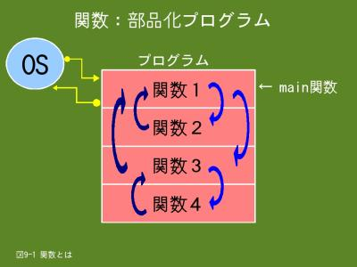

9. プログラムの部品化のための関数（1/3）
9.1 関数とは
- 
- 【図９-１】関数とは
関数とはプログラムを構成する「部品プログラム」です。少し複雑なプログラムになりますと、ソースプログラムの行数が多くなり、プログラム全体の見通しが悪くなるため、理解しにくいプログラムになってしまいます。そこで、プログラムを機能単位に部品化して、その部品を組み合わせることにより、１つのプログラムを作成することが行われています。
Ｃ言語では大別すると、ライブラリ関数とユーザ定義関数の２つの関数があります。ライブラリ関数はOSやコンパイラの一部として提供される関数で、ユーザ定義関数は我々が作成する関数です。ここではユーザ定義関数に付いて説明します。
図9-1では１つのプログラムが４つの関数で作られています。このプログラムを起動すると、OSから制御が関数１に渡って来ますが、Ｃ言語では、この関数の名前はmain（main関数）と決まっています。その他の関数の名前は自由に付けることが出来ます。今までの例題プログラムはmain関数１つで構成されていました。
関数１が関数２を呼び出しますと、制御は関数２に渡り、関数２に定義されている一連の命令を実行し、最後まで実行したら制御は関数１に戻ります。同じように、関数１が関数３を呼び出しますと、関数３を実行し、最後まで実行したら関数１に戻ります。また、関数３が関数４を呼び出すように、関数から関数を呼び出すことも出来ます。関数１が最後まで実行したらOSに制御が戻り、プログラムが終了します。一般的に、関数１（main関数）は関数を呼び出すことによりプログラムの実行を制御する関数になります。
なお、ライブラリ関数には例題プログラムで使っているprintf関数やscanf関数がありますが、これらライブラリ関数の種類や使い方については「14. ライブラリ関数」で説明します。
9.2 関数の宣言
関数を使う場合は、次の宣言および、定義が必要です。
関数プロトタイプ宣言は変数の宣言と同じように、関数の型名や関数名を宣言します。また、関数は定義しただけでは実行しませんので、実行するには関数呼び出しという手続きが必要です。
関数を呼び出すときに、呼び出す関数に値を渡すことができます。この値を引数と呼んでいます。また、関数の実行終了時に、呼び出し元に値を返すことも出来ます。この値のことを「戻り値」とか「返り値」と呼んでいますが、当講座では返り値と呼ぶことにします。
引数は関数呼び出しでは実引数、関数定義では仮引数と表記して区別していますが、実際には区別する必要はあまりないでしょう。引数ということで認識していれば問題はないと思います。
返り値の型名や引数の型名は変数や配列の型名と同じく、int型やdouble型などを指定しますが、返り値や引数がないことを表すvoid型という型名があります。
関数定義でreturn文を指定すると呼び出し元に返り値を返すことができます。また、return文を省略すると制御が呼び出し元に戻るだけになります。
※ 関数プロトタイプ宣言
返り値の型名 関数名(引数の型名１ 引数名１, 引数の型名２ 引数名２, …);
※ 関数呼び出し
関数名(実引数名１, 実引数名２, …);
※ 関数定義
返り値の型名 関数名(仮引数の型名１ 仮引数名１, 仮引数の型名２ 仮引数名２, …)
{
関数内で使用する変数や配列の宣言;
実行文;
return 値;
}
- 返り値の型名
- この関数の返り値の型名を指定します。省略するとint型を仮定します。また、返り値がない場合はvoid型を指定します。なお、返り値がポインタの場合は*（アステリスク）を付けて「返り値の型名 *関数名」のように指定します。
- 関数名
- 命名規則は変数の場合と同じで、先頭１文字は英字（アンダライン含む）で、２文字目以降は英数字の組み合わせです。
- 引数の型名１ 引数名１
- 変数の宣言と同じ要領で、引数の型名と引数名を指定します。引数が複数ある場合は,（コンマ）で区切って指定し、引数がない場合はvoidを指定します。
- 実引数名１
- 呼び出す関数に引数として渡す値（通常は変数や定数）を指定します。複数ある場合は,（コンマ）で区切って指定します。また、引数がない場合は何も指定しません。
- 仮引数の型名１ 仮引数名１
- 呼び出された時に引数として渡ってくる値の型名と引数名を指定します。これにより、呼出し時に指定した実引数の値を仮引数名で参照できます。引数が複数ある場合は,（コンマ）で区切って指定し、引数がない場合はvoidを指定します。
- return 値
- 呼び出し元に制御を戻します。「値」を指定すると、その値が返り値として呼び出し元に返り、省略すると返り値を返しません。なお、return文を指定しない場合は関数定義の最後の}の直前で呼び出し元に制御を戻します。
関数プロトタイプ宣言、関数呼び出し、関数定義にそれぞれ引数を指定しますが、引数は指定した順番により対応を取ります。引数名は関係ありませんので、引数名は一致させる必要はありません。（それぞれ、異なっていてもかまいません。通常は異なっていると思います）
次の例は、第１引数が体重で第２引数が身長のCalcBmi関数です。体重と身長の順に指定する必要はありますが、引数名は異なっていても構いません。
double CalcBmi(double BmiWeight, double BmiHeight); ← 関数プロトタイプ宣言です
CalcBmi(weight, height); ← 関数呼び出しです
double CalcBmi(double pWeight, double pHeight) ← 関数定義です
関数呼び出しも１つの式となり、返り値が式の値になります。従って、返り値を代入演算子で変数に代入したり、if文で比較することが出来ます。
atai = func1(10); ← 関数func1の返り値を変数ataiに代入します
if(func2(atai) == 0) ← 関数func2の返り値が０かどうかを判定します
9.2.2 例題
例題１
お馴染みの肥満度（BMI）を求めるプログラムですが、肥満度の計算を関数（CalcBmi関数）で行います。CalcBmi関数はdouble型の体重と身長を引数として受け取り、計算結果の肥満度を返り値として返します。
#include <stdio.h>
int main(void)
{
double weight;
double height;
double bmi;
int return_code;
/* CalcBmi関数のプロトタイプ宣言 */
double CalcBmi(double BmiWeight, double BmiHeight);
printf("肥満度(BMI)の計算を行います\n");
printf("体重(kg)と身長(cm)を入力してください ==> ");
scanf("%lf%lf", &weight, &height);
bmi = CalcBmi(weight, height); /* 肥満度(BMI)を返り値として取得 */
if(bmi > 0.0)
{
printf("肥満度は%.2fです\n", bmi);
return_code = 0;
}
else
{
printf("入力した値が不当です\n");
return_code = 1;
}
return return_code; ← この関数の返り値はint型のため、変数return_codeはint型です
}
/* 体重と身長を元に肥満度(BMI)の計算を行う */
double CalcBmi(double pWeight, double pHeight)
{
double bmi;
/* 体重と身長の値をチェック */
if (pWeight > 0.0 && pHeight > 0.0)
{
/* 身長をセンチメートルからメートルに変換 */
pHeight = pHeight / 100.0;
/* 肥満度(BMI) = 体重(kg) / 身長(m) / 身長(m) */
bmi = pWeight / pHeight / pHeight;
}
else
{
bmi = 0.0;
}
return bmi; /* 肥満度(BMI)を返り値として返す */
}
$ ./ex09_1.prg
肥満度(BMI)の計算を行います
体重(kg)と身長(cm)を入力してください ==> 83.5 184.5
肥満度は24.53です
$ echo $? ← ex09_1.prgの返り値をechoコマンドで表示します
0 ← 肥満度の計算が出来ましたので、返り値は０です
$
$ ./ex09_1.prg
肥満度(BMI)の計算を行います
体重(kg)と身長(cm)を入力してください ==> 83.5 -184.5
入力した値が不当です
$ echo $?
1 ← 肥満度の計算が出来ませんでしたので、返り値は１です
$
- 2行目
- main関数の返り値の型名をint型として明示的に指定します。これにより、main関数から整数の値がOSに返ることを宣言したことになります。また、引数を受け取らないため、仮引数の型名としてvoid型を指定します。
- 9行目
- 肥満度の計算を行うCalcBmi関数の関数プロトタイプ宣言です。返り値はdouble型で、第１引数がdouble型のBmiWeigh（体重）、第２引数がdouble型のBmiHeight（身長）です。
- 15行目
- CalcBmi関数の呼び出しを行います。第１引数が体重の値、第２引数が身長の値です。CalcBmi関数の実行結果である肥満度は返り値として返ってきて、式の値となりますので、それを変数bmiに代入します。
- 16行目
- 変数bmi（CalcBmi関数の返り値）の値が０より大きいかをチェックします。０の時は入力データ（体重と身長の値）が不当です。
- 18〜19行目
- 肥満度を出力して、このプログラムの返り値０（正常終了の意味）を変数return_codeに代入します。
- 23〜24行目
- 入力データの値が不当なため、その旨のメッセージを出力して、このプログラムの返り値１（異常終了の意味）を変数return_codeに代入します。
- 27行目
- main関数を終了し、呼出し元（OS）に返り値（変数return_codeの値）を返します。これにより、当プログラムが終了します。
- 31行目
- ここからCalcBmi関数の定義です。返り値の型名はdouble型で、第１引数がdouble型のpWeight（体重）、第２引数がdouble型のpHeight（身長）です。
- 36行目
- 引数として渡ってきた体重と身長の値をチェックします。０より小さい場合はエラーとします。
- 41行目
- 肥満度の計算を行い、結果を変数bmiに代入します。
- 45行目
- 引数として渡ってきた体重と身長の値の両方あるいは、一方が不当で肥満度の計算が出来なかったため、変数bmiに０を代入します。
- 48行目
- CalcBmi関数を終了し、呼出し元（main関数）に返り値（変数bmiの値）を返します。
例題２
上記と同じ肥満度(BMI)を求めるプログラムですが、CalcBmi関数はdouble型の体重と身長を引数として受け取り肥満度を出力します。この為、肥満度を返す必要はありませんので、返り値はありません。
#include <stdio.h>
int main(void)
{
double weight;
double height;
/* CalcBmi関数のプロトタイプ宣言 */
void CalcBmi(double BmiWeight, double BmiHeifht);
printf("肥満度(BMI)の計算を行います\n");
printf("体重(kg)と身長(cm)を入力してください ==> ");
scanf("%lf%lf", &weight, &height);
CalcBmi(weight, height);
return 0;
}
/* 体重と身長を元に肥満度(BMI)の計算を行い出力する */
void CalcBmi(double pWeight, double pHeight)
{
/* 体重と身長の値をチェック */
if (pWeight > 0.0 && pHeight > 0.0)
{
/* 身長をセンチメートルからメートルに変換 */
pHeight = pHeight / 100.0;
/* 肥満度(BMI) = 体重(kg) / 身長(m) / 身長(m) */
printf("肥満度は%.2fです\n", pWeight / pHeight / pHeight);
}
else
{
printf("入力した値が不当です\n");
}
return;
}
$ ./ex09_2.prg
肥満度(BMI)の計算を行います
体重(kg)と身長(cm)を入力してください ==> 88.2 185.8
肥満度は25.55です
$
- 7行目
- 肥満度の計算を行うCalcBmi関数の関数プロトタイプ宣言です。返り値は有りませんのでvoid型で、第１引数がdouble型のBmiWeigh（体重）、第２引数がdouble型のBmiHeight（身長）です。
- 13行目
- CalcBmi関数の呼び出しです。第１引数が体重の値、第２引数が身長の値です。
- 19行目
- ここからCalcBmi関数の定義です。返り値は有りませんのでvoid型で、第１引数がdouble型のpWeight（体重）、第２引数がdouble型のpHeight（身長）です。
- 27行目
- 肥満度の計算を行い、結果を出力します。
- 34行目
- CalcBmi関数を終了します。返り値として返す値はありません。
例題３
例題１のプログラムを関数毎にソースファイルを分けました。main関数はex09_3_1.cファイル、CalcBmi関数はex09_3_2.cファイルです。
/* ソースファイル名：ex09_3_1.c */
#include <stdio.h>
int main(void)
{
double weight;
double height;
double bmi;
int return_code;
/* CalcBmi関数のプロトタイプ宣言 */
double CalcBmi(double BmiWeight, double BmiHeifht);
printf("肥満度(BMI)の計算を行います\n");
printf("体重(kg)と身長(cm)を入力してください ==> ");
scanf("%lf%lf", &weight, &height);
/* 肥満度(BMI)を返り値として取得 */
if((bmi = CalcBmi(weight, height)) > 0.0)
{
printf("肥満度は%.2fです\n", bmi);
return_code = 0;
}
else
{
printf("入力した値が不当です\n");
return_code = 1;
}
return return_code;
}
/* ソースファイル名：ex09_3_2.c */ ← CalcBmi関数を定義しているソースファイルです
/* 体重と身長を元に肥満度(BMI)の計算を行う */
double CalcBmi(double pWeight, double pHeight)
{
double bmi;
/* 体重と身長の値をチェック */
if (pWeight > 0.0 && pHeight > 0.0)
{
/* 身長をセンチメートルからメートルに変換 */
pHeight = pHeight / 100.0;
/* 肥満度(BMI) = 体重(kg) / 身長(m) / 身長(m) */
bmi = pWeight / pHeight / pHeight;
}
else
{
bmi = 0.0;
}
return bmi;
}
$ gcc -o ex09_3.prg ex09_3_1.c ex09_3_2.c ← ２つのソースファイルを指定してコンパイルを行います
$
$ ./ex09_3.prg
肥満度(BMI)の計算を行います
体重(kg)と身長(cm)を入力してください ==> 66.6 166.6
肥満度は24.00です
$ ./ex09_3.prg
肥満度(BMI)の計算を行います
体重(kg)と身長(cm)を入力してください ==> 0 166.6
入力した値が不当です
$